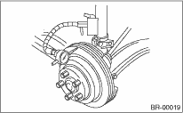

1. Check the front wheel bearing play and axle hub runout before the inspection of disc rotor runout limit. 
2. Secure the disc rotor by tightening the five wheel nuts.
3. Set a dial gauge 10 mm (0.39 in) inward from the disc rotor outer circumference. Rotate the disc rotor to check runout. If the runout of disc rotor exceeds the service limit, grind the disc rotor. After grinding, check the thickness of the disc rotor with the method described in step 4).
Disc rotor runout limit:
0.075 mm (0.0030 in)

4. Set a micrometer 10 mm (0.39 in) inward from the disc rotor outer perimeter, and then measure the disc rotor thickness. If the thickness of disc rotor exceeds the service limit, replace with a new disc rotor.

|
Standard |
Limit |
Disc rotor outer diameter | ||
|
Disc rotor thickness A |
15″ |
24 mm (0.94 in) |
22 mm (0.87 in) |
277 mm (10.91 in) |
|
16″ |
24 mm (0.94 in) |
22 mm (0.87 in) |
294 mm (11.57 in ) | |